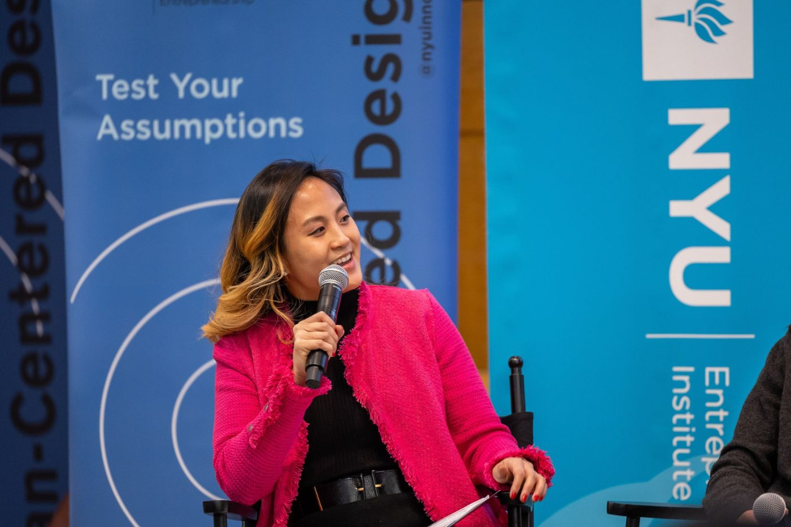
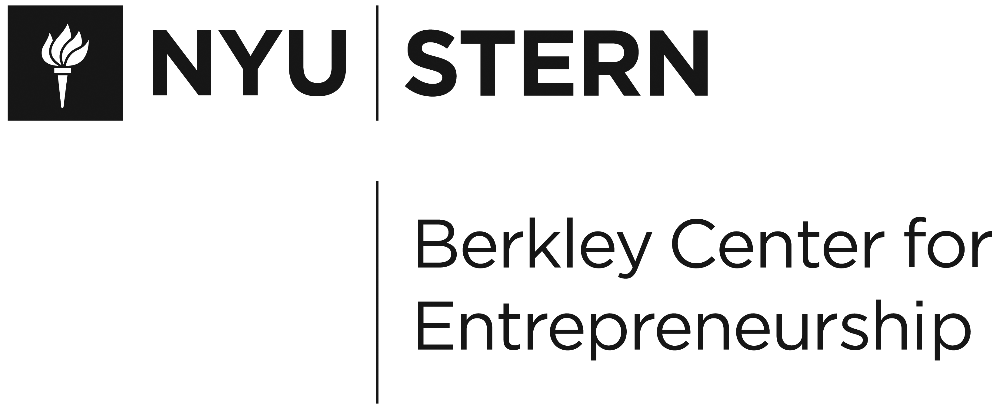

Founder advisor · Facilitator · Writer
I help people unearth what they care about, and build from there.
Former founder and CEO of AdmitSee and Venture Partner at Pioneer Fund. Lawyer by training, certified in Authentic Relating, based in New York.
Two ways to work together
Build with a team, or slow down on your own.

Advisory · for cofounding teams
SJS Founder Advisory
The Founder Clarity Sprint: three working sessions to settle roles, equity and commitment before assumptions turn into friction. Also entrepreneurship program design for universities and accelerators.
Go to Advisory →
Still Life · for individuals and groups
Still Life
Authentic Relating workshops, essays on identity, power and work, and a meditation practice arriving in 2027.
Go to Still Life →
Ventures

Built, backed, advised
AdmitSeeFounder & CEO, 2014–2022
Pioneer FundVenture Partner, 2018–present

NYU Stern Berkley CenterAssociate Director, 2022–2026
Selected writing
From The Steph Press
- The Startup Culture ProblemWork · Sept 2021
- Authenticity in the American WorkplaceWork & identity · Dec 2021
- The Paralysis of Fuck YesDeciding · Nov 2021
- Not-KnowingPoem · Jan 2024